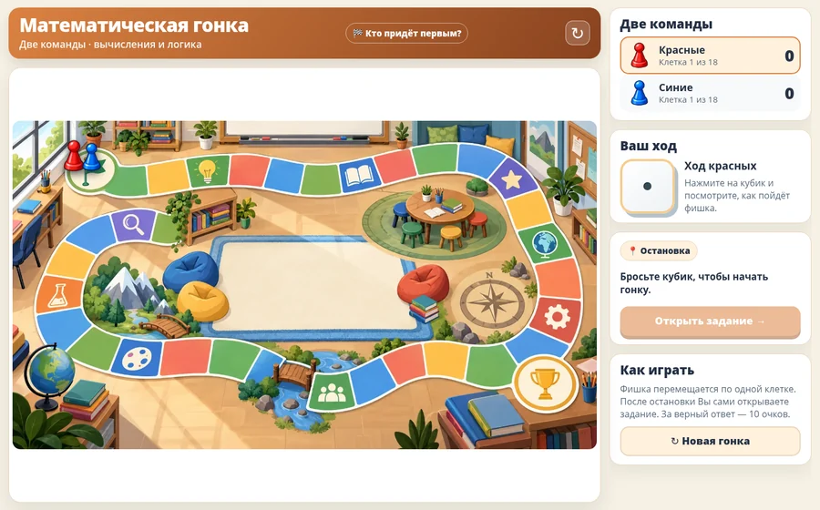
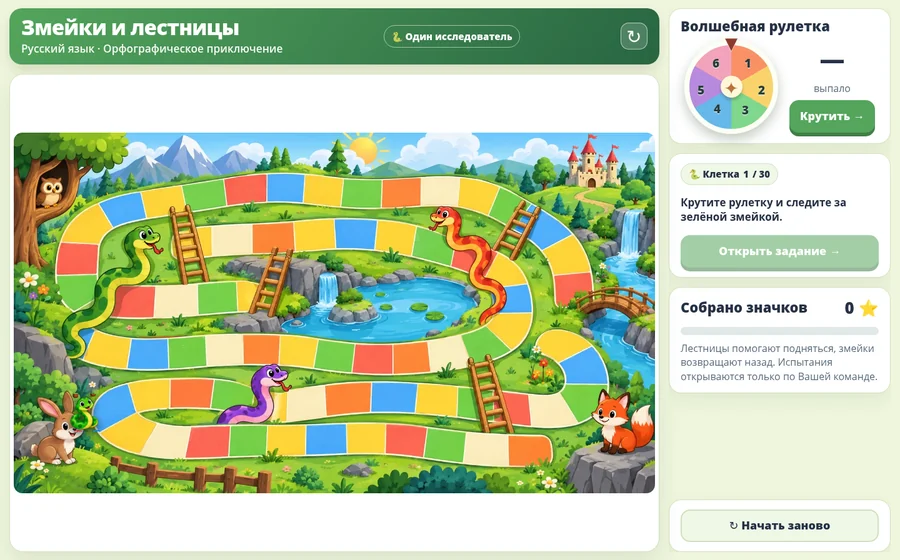
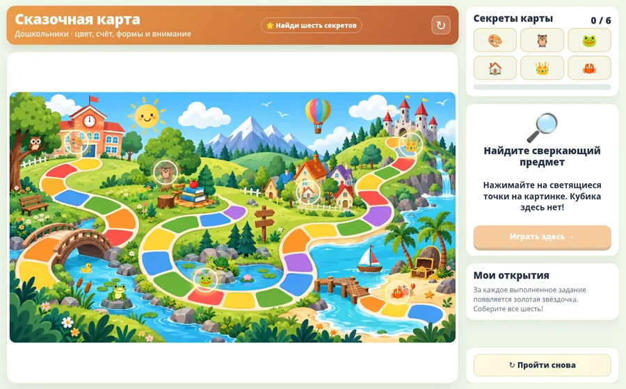
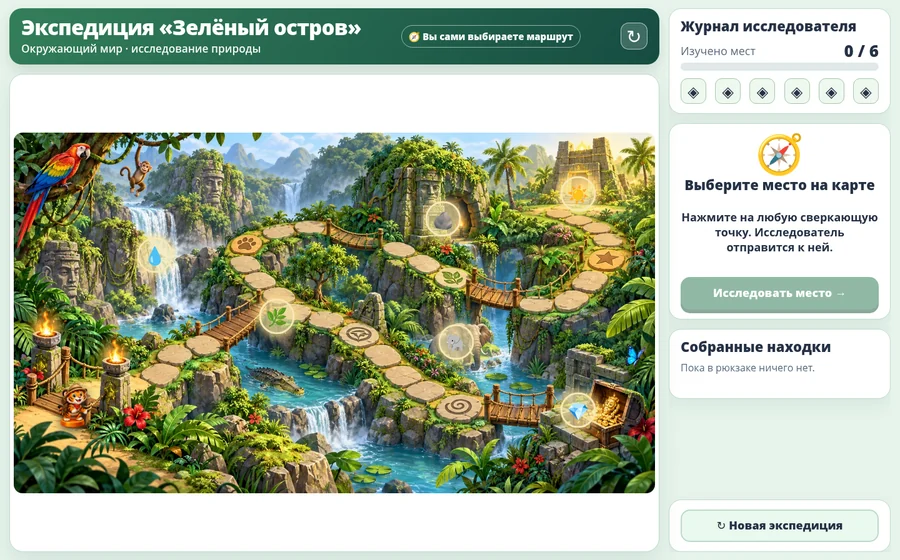
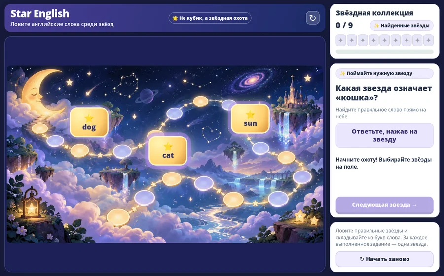

01Математика
🎲 Математическая гонка
Две команды, настоящий кубик и перемещение по клеткам.
Открыть игру ↗В одной игре бросают кубик, в другой крутят рулетку, в третьей ищут предметы, в четвёртой исследуют карту, а в пятой ловят английские слова-звёзды. Все игры открываются в браузере.

01Две команды, настоящий кубик и перемещение по клеткам.
Открыть игру ↗
02
03
04
05